Blackthorn Manor
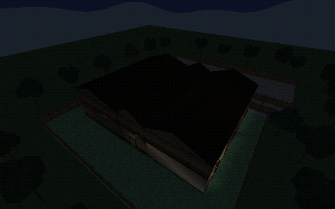
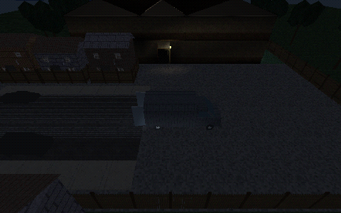
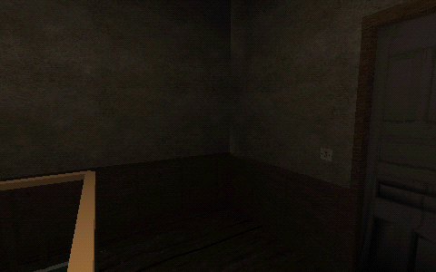

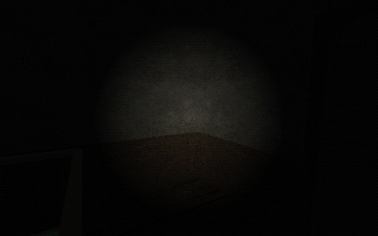
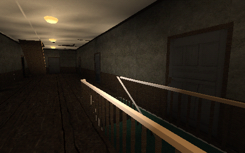
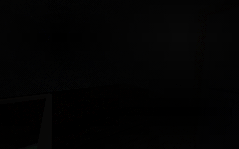
26 October 2026. Actual completed OpenGL frames from the current shared lighting engine, with repaired outdoor opening framing and physical fittings in long prototype halls. Static scripted samples; these do not unlock missions or establish full map fitness, LAN or real-time performance acceptance.
Shared gallery · Measured evidence and remaining gates
House, Farmhouse and School keep their refined fixture layouts. Six prototype buildings receive repeated fittings instead of a single out-of-range central lamp. Outdoor opening framing uses site ownership anchors without inventing rectangular buildings. Hollow Creek native captures use320×200; other captures480×300. Native aerial fog and CPU water cost remain open.
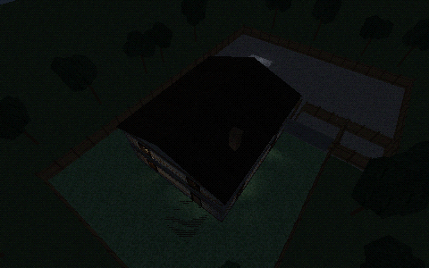
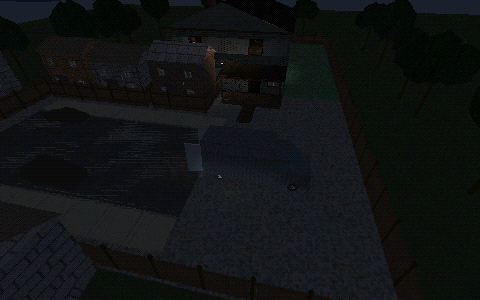
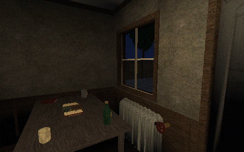
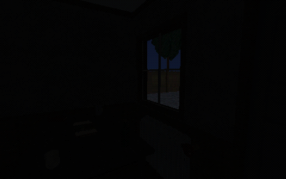
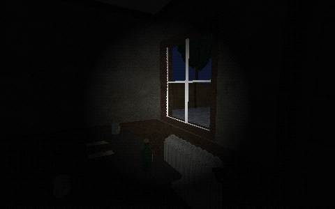
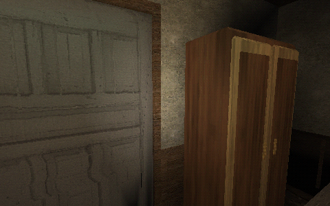
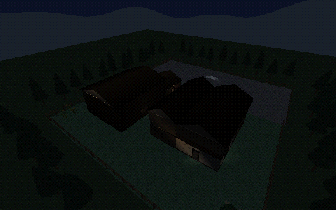
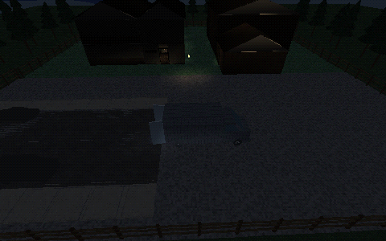
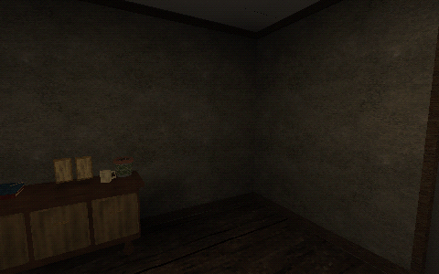
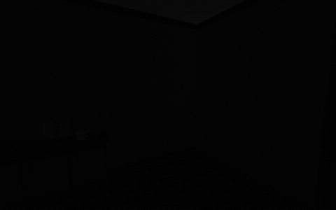
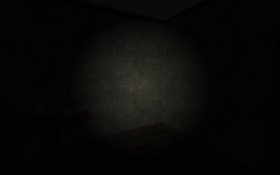
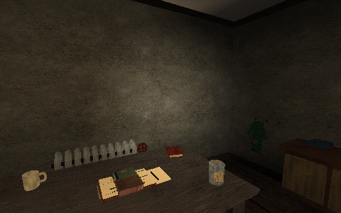
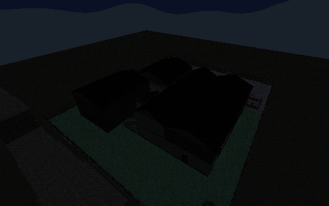
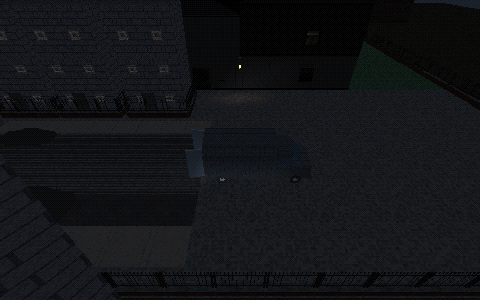
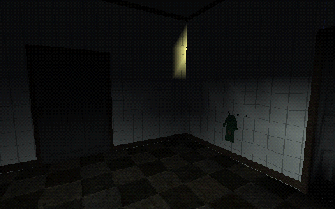
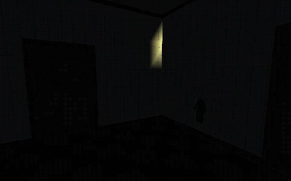
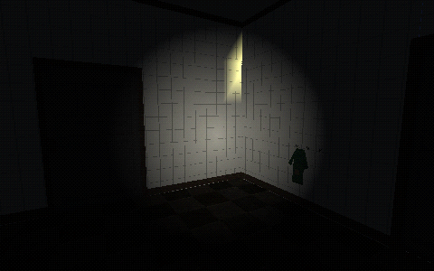
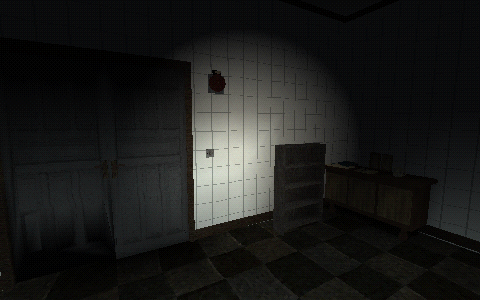






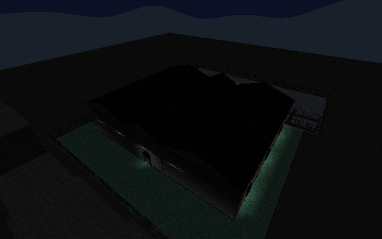
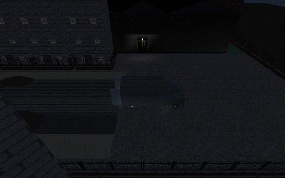
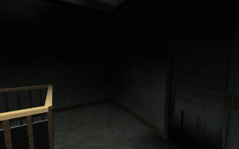
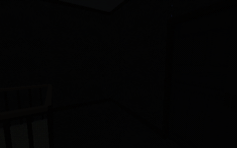
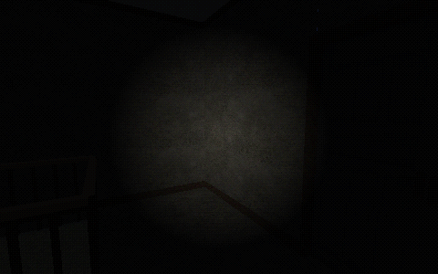
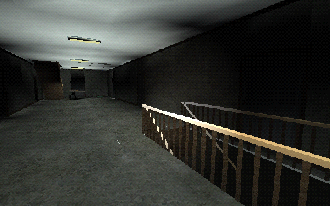

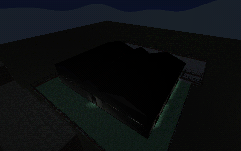
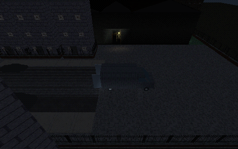
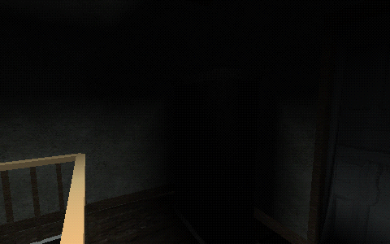

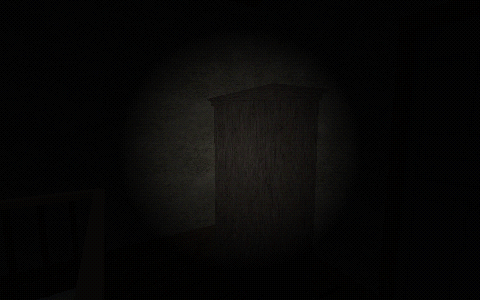
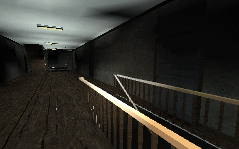
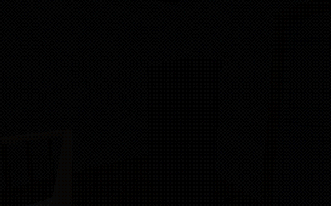
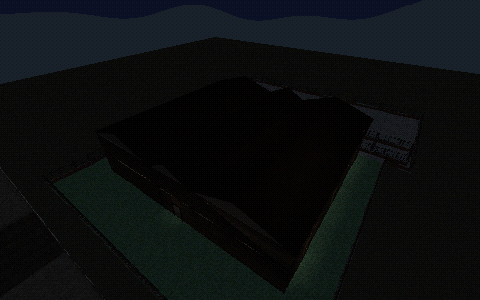
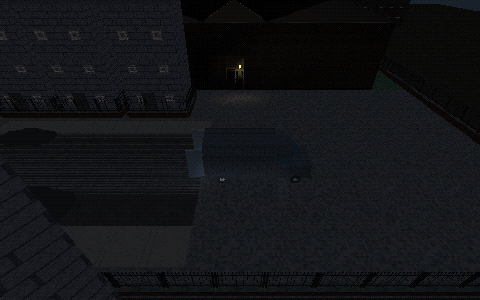
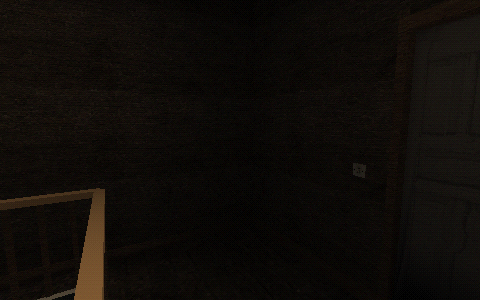

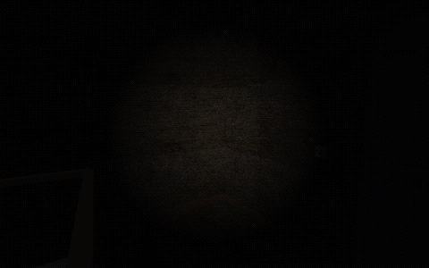
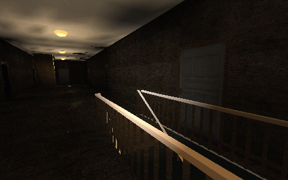
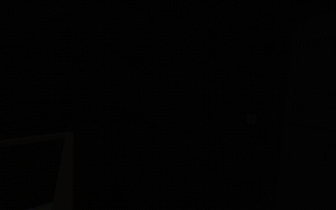
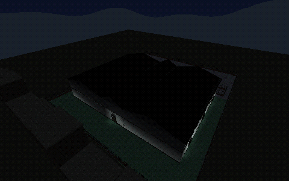
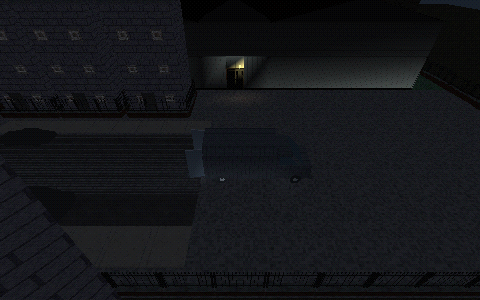
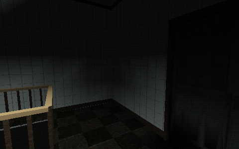
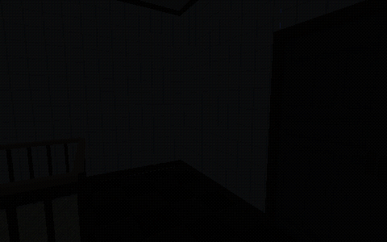
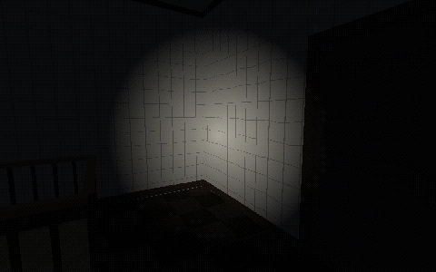
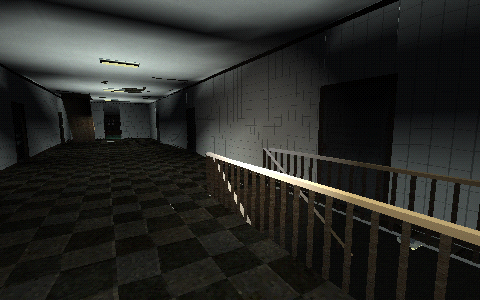

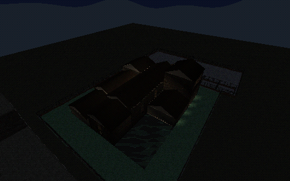
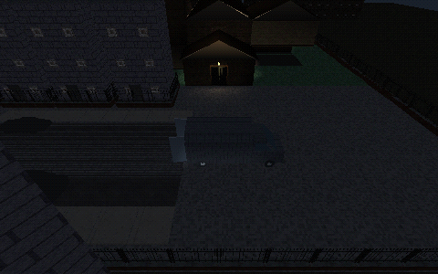